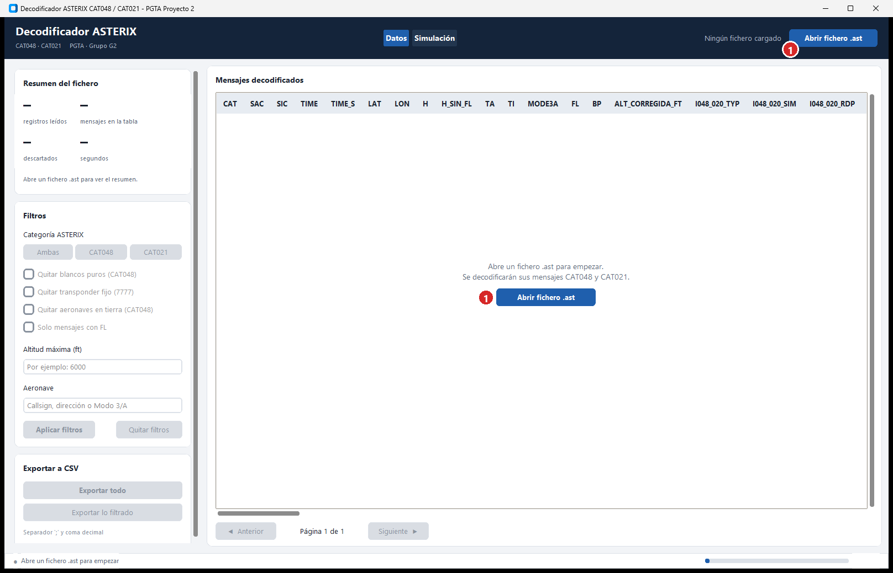
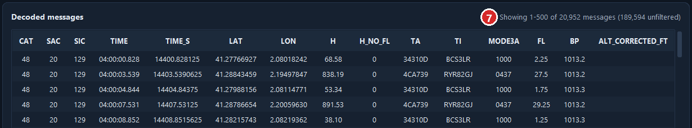
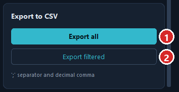
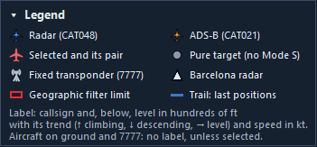

CAT048 · CAT021
ASTERIX Decoder
User Manual

PGTA · Project 2
Group 02
November 2026
CAT048 · CAT021
User Manual
PGTA · Project 2
Group 02
November 2026
The ASTERIX Decoder reads .ast files with CAT048 (Barcelona radar) and CAT021 (ADS-B) messages.
It shows the messages in a table, lets you filter them and export them to CSV, and simulates the aircraft trajectories on a map.
Unzip the delivery .zip. ASTERIXDecoder.exe is in the root of the .zip; this manual is in the report folder.
Double-click ASTERIXDecoder.exe. Nothing needs to be installed (64-bit Windows). It takes a few seconds to open.
If Windows shows the "Windows protected your PC" warning, click "More info" and then "Run anyway".
.ast files. They are not part of the delivery. They are the course files: asterix_radar.ast, asterix_adsb.ast and asterix_combinado.ast. They can be in any folder of the computer.
Internet. The simulation map needs an internet connection. Everything else works offline.
Rebuilding the executable. Double-click code\crear_exe.bat (Python 3 is needed). The first time it takes a few minutes and needs internet.
Python 3 must be installed; the project has been tested with Python 3.14. Open a terminal in the code folder and type:
python -m venv .venv.venv\Scripts\python -m pip install -r requirements.txt.venv\Scripts\python main.pySteps 1 and 2 are only done the first time. After that, step 3 is enough.
Click Open .ast file 1. It is at the top right and, at the start, also in the centre of the table.

In the Windows dialog, go to the folder of the file, choose it and click Open.
Wait while it is decoded. The large bar 1 and the bottom bar 2 show the progress. On our computer, the combined file takes about 20 s.

When it finishes, File summary shows the records read, the messages in the table, the discarded ones and the seconds it took.
Below it there is the detail by category and by discard reason.
The table does not include the messages outside 40.9–41.7° N and 1.5–2.6° E, the CAT021 on ground or the messages without position (without it, the area cannot be checked).

The Decoded messages table has all the messages, in the order of the file. Its columns are the same as those of the CSV.

An empty cell means that the message does not carry that data item.
In the application the numbers use the English format (decimal point). The CSV uses the decimal comma (section 6).
Example: the P3 input with asterix_combinado.ast.

The filters are only applied when you click Apply filters. They can all be combined.
If you hover the mouse over a filter, a tooltip explains what it does.


Click Export all or Export filtered.
In the Save CSV dialog, choose the folder and the name, and click Save.
When it finishes, the Export finished message appears, with the number of messages and the path of the file.
"#######" in Excel. The column is too narrow (it happens with the time, TIME). Widen it: double-click the right border of its header, or Format > AutoFit Column Width.
Excel. If you open the CSV with a double click, Excel removes the leading zero of the Mode 3/A (for example, 0437 becomes 437) and may read some Mode S address (TA) as a number.
To see them as in the application, import the CSV from Excel and set the MODE3A and TA columns as Text.
Click Simulation, in the centre of the top bar.
What is simulated is what is filtered in the Data tab. The blue notice above the map says how many messages are simulated and with which filters. To simulate everything, click Clear filters in Data.
Use the controls above the map. Below them is the time line: the Simulation time (UTC) on the left, the time bar in the centre and Go to time on the right. On narrower screens, Labels, Trails, Follow, System and Map move to a row of their own.

| Control | What it does | |
|---|---|---|
| 1 | Play | Runs the simulation in steps of 1 s of time of day. |
| 2 | Pause | Stops the simulation. When you switch to the Data tab, the simulation pauses. |
| 3 | +1 s | Advances a single 1 s step. |
| 4 | Reset | Stops the simulation and goes back to the first time in the data. |
| 5 | Speed | From x1 to x60. Each step is always 1 s; the speed only changes how often a step is drawn (x1: one step per second; x60: 60 steps per second). |
| 6 | Labels | Shows or hides the data block of each aircraft (see the next page). |
| 7 | Trails | Shows or hides the line with the last positions of each aircraft. |
| 8 | Follow | Keeps the selected aircraft in the centre of the map, without changing the zoom. If the aircraft disappears, following stops. |
| 9 | System | Both, Radar (CAT048) or ADS-B (CAT021). With Both, an aircraft seen by both systems appears twice on the map. It also filters the traffic lists. |
| 10 | Map | Light (the original one, shown at the start) or Dark (darkened, so that the aircraft stand out). |
| 11 | Go to time | Type the time (UTC) as hh:mm and click Go or press Enter. Each aircraft appears at its last known position before that time. |
| 12 | Time bar | It goes from the first to the last time of the data and moves on its own while playing. Drag it: the clock shows the time and, on release, the simulation jumps to that time. |
When you go to another time (Go to time, the bar or Reset), the event log is cleared and the totals go back to zero.

Click an aircraft. It turns red 1 and, if the other system also sees it, so does its pair 2. In the example, 1 is the radar and 2 the ADS-B of the same aircraft (TVF32ER).
Colours: radar; ADS-B; the selected aircraft and its pair.
To the right of the map, from top to bottom: Traffic and Selected aircraft. If they do not fit, the panel scrolls with the mouse wheel.
Click a row of the lists to select that aircraft: the map centres on it. Below the lists, how many aircraft are drawn on the map: radar, ADS-B and pure targets.
An aircraft moves from one list to the other when 2 consecutive messages confirm it. Until then, or if it is a pure target or the fixed transponder, it does not appear in the lists.

At the bottom left of the map is the Legend: what each icon is and how the labels are read (with the mouse over some of them, an explanation appears). At the top right, the Events: what is happening, with the most recent on top (time, type, callsign and system), and in the title the totals of takeoffs and landings. Both are visible when the tab opens; if they cover something, click their title to collapse them.


| Event | When it appears | |
|---|---|---|
| + | New contact | An aircraft appears, or comes back after having disappeared. |
| ↗ | Takeoff | It goes from on ground to airborne. |
| ↘ | Landing | It goes from airborne to on ground. |
| × | Contact lost | It spends more than 12 s without messages from any system. |
The events appear when playing or stepping 1 s. Click one to select its aircraft and centre the map on it, if it is still in view.
| Problem | What to do |
|---|---|
| When opening the .exe, "Windows protected your PC" appears. | It is the SmartScreen warning, because the executable is not signed. Click "More info" and then "Run anyway". |
| The .exe takes a while to open. | It is normal: it unpacks itself when it starts. Do not open it twice. |
| The map does not show the coast or the streets. | There is no internet connection. The map downloads its images from OpenStreetMap: connect and move the map a little. |
| Nothing can be seen in the simulation. | Check the filters of Data (the blue notice lists them) and the System selector. If a message appears on the map, it says what to do. |
| An aircraft on the map does not appear in the traffic lists. | There are not yet 2 consecutive messages that say whether it is on the ground or airborne, or it is a pure target or the fixed transponder, which do not count as traffic. Also check the System selector. |
| Grey dots appear and soon disappear. | They are pure targets (primary or secondary radar echoes, without Mode S). They are removed with the "Remove pure targets" filter. |
| Excel shows "#####" or removes zeros. | Widen the column or import it as text (section 6). |